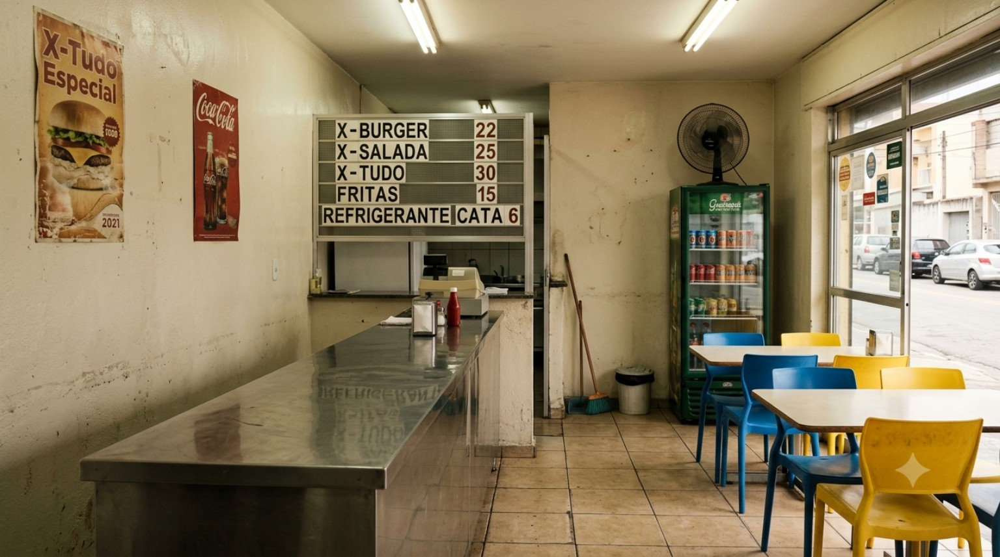
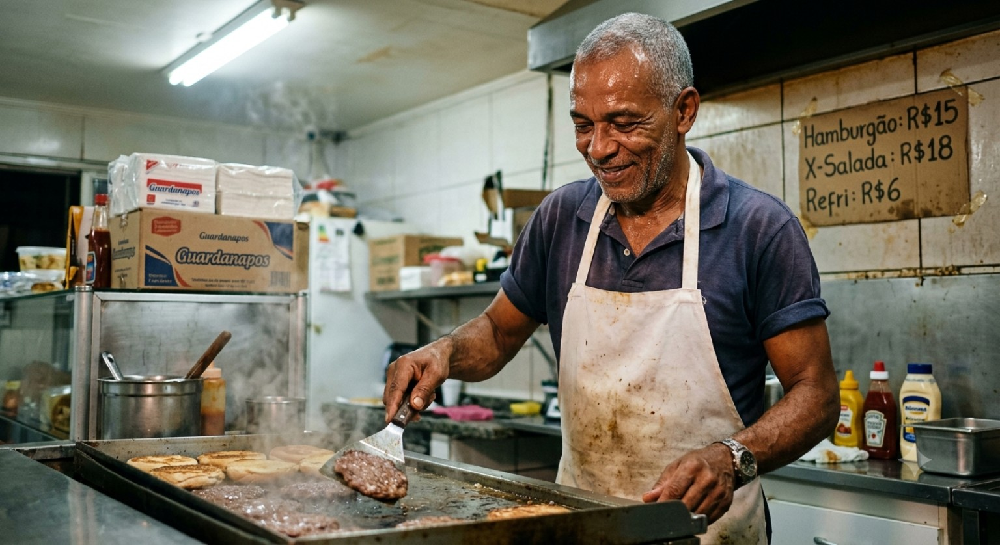
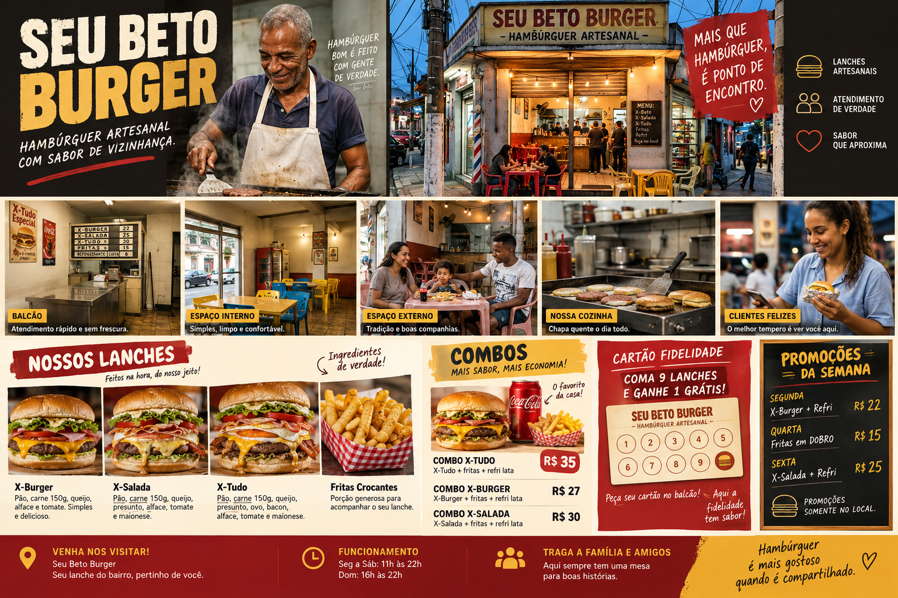

CLÁSSICO
X-Burger
Pão, carne, queijo e montagem direta. A opção para quem quer o essencial bem feito.
Uma campanha que mostra o que existe de mais forte no Seu Beto: comida feita na chapa, ambiente simples, atendimento próximo e motivos concretos para o cliente voltar.

Em vez de esconder a simplicidade, a campanha transforma o balcão, a chapa, as mesas e a fachada em sinais de proximidade e autenticidade.



Fotos próximas, porções generosas e descrições curtas. A campanha vende primeiro com os olhos.
Pão, carne, queijo e montagem direta. A opção para quem quer o essencial bem feito.
Mais frescor e textura no lanche, mantendo o jeito simples de lanchonete de bairro.
Camadas generosas, queijo, salada e complementos. É o lanche de impacto visual da campanha.
Crocante, compartilhável e ideal para aumentar a percepção de valor dos combos.
Descrições conceituais para o mockup. Ingredientes, nomes e preços devem ser conferidos no cardápio real antes da veiculação.
A lógica é usar materiais baratos, fáceis de explicar no balcão e que não exijam cadastro, QR code ou sistema.
Uma lousa ou cartaz A3 próximo à entrada anuncia um único destaque do dia. Ex.: “Quarta do X-Tudo”.
Material: lousa, cavalete ou porta-cartaz.O atendente oferece verbalmente um complemento simples: lanche + fritas ou lanche + bebida.
Material: display pequeno junto ao caixa.Em um dia de menor movimento, uma ação presencial estimula mesas com amigos ou família.
Exemplo: na compra de 3 lanches, benefício definido pela casa.Uma faixa de mesa ou cartaz no salão pode comunicar benefícios para pedidos compartilhados. É simples, visível e permite que o próprio atendente explique a regra.
Para um estabelecimento enxuto, o melhor programa é aquele que cabe no bolso, o atendente entende em segundos e o cliente consegue guardar.
A cada lanche, um carimbo.
Cartão em papel, carimbo próprio e regra única. Nada de cadastro.
Depois de uma compra selecionada, o cliente recebe um cupom físico para usar em outra visita.
Atendimento pode reforçar a fidelidade verbalmente: “traz seu cartão na próxima”. A relação humana vira parte do programa.
Cartões destacáveis ou convites impressos podem estimular o cliente a trazer outra pessoa, sem depender de redes sociais.
Fotos e anúncios fazem o público reconhecer a casa.
Bastidores e instalações mostram que existe um negócio real e próximo.
Cartaz, lousa e abordagem no balcão transformam intenção em compra.
O cliente leva um motivo físico para retornar.

Painel visual conceitual. Valores e condições exibidos em peças ilustrativas não devem ser usados comercialmente sem validação.